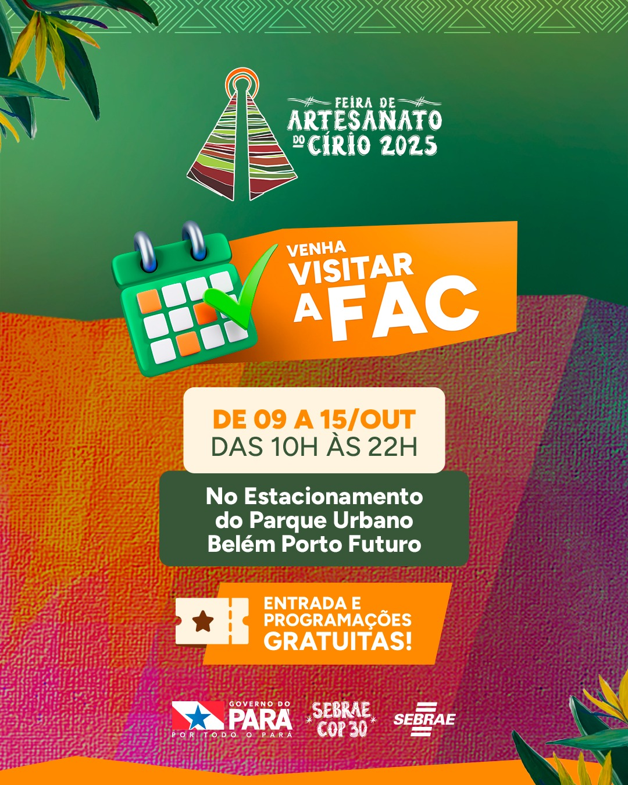
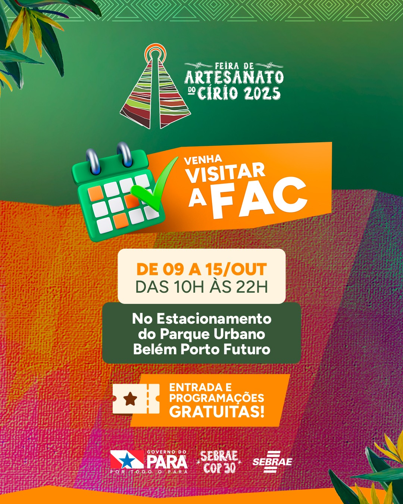
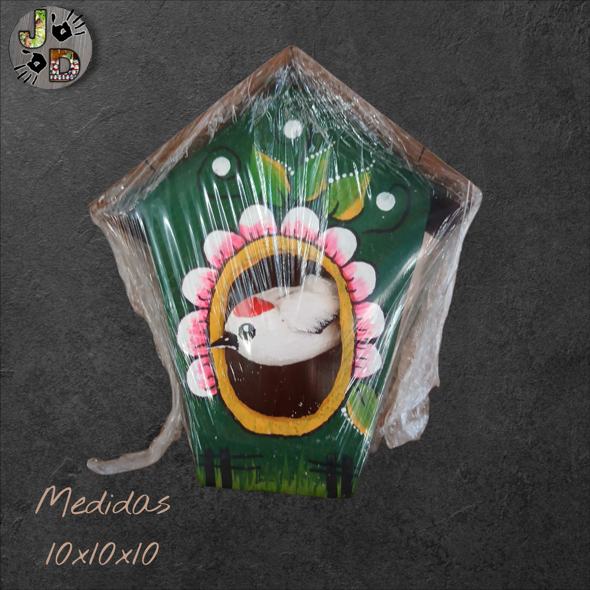
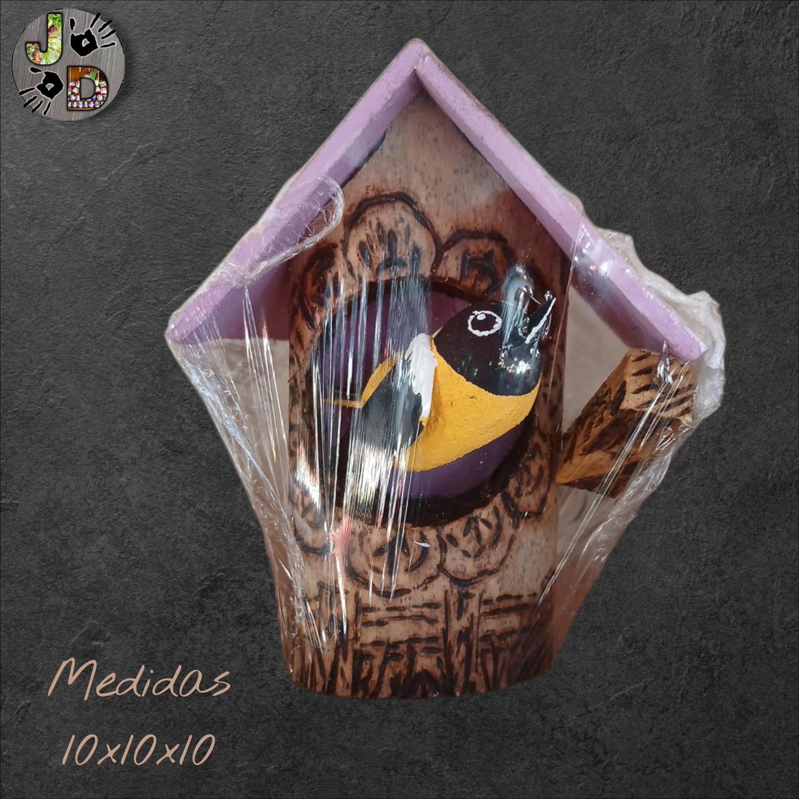
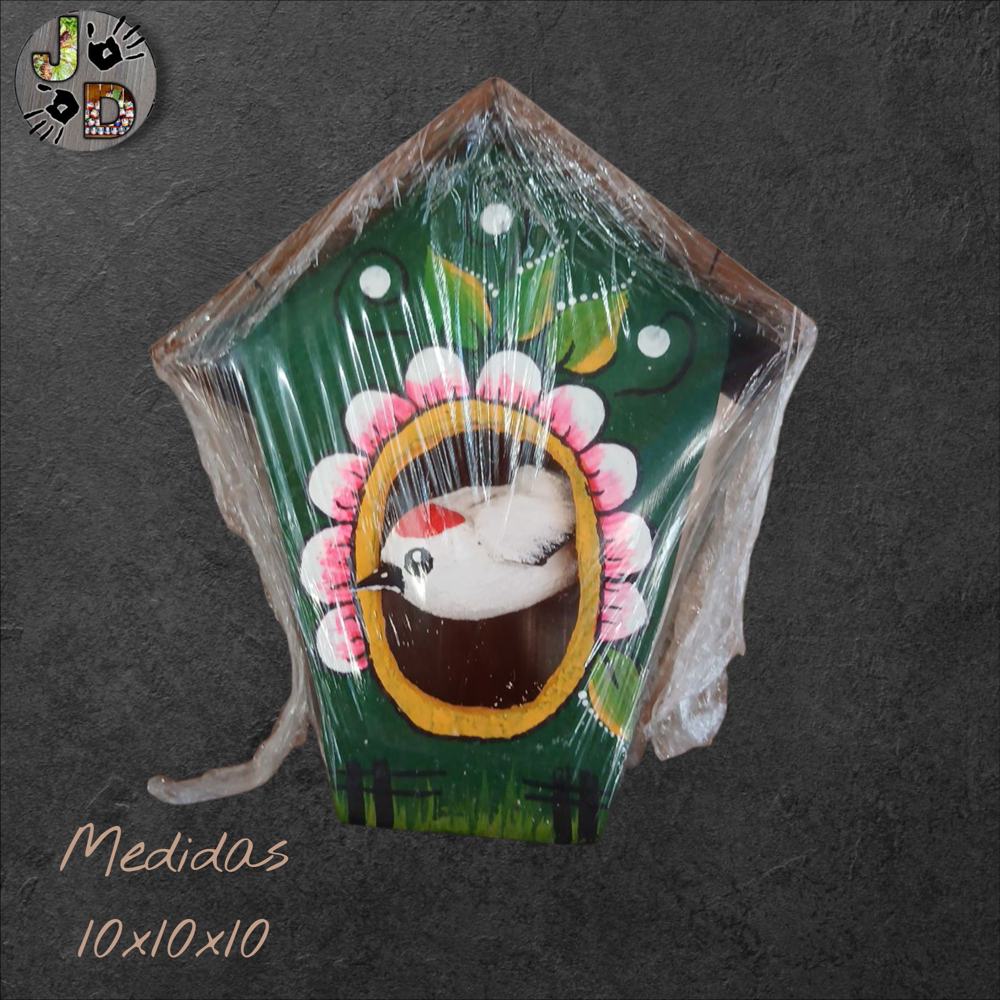
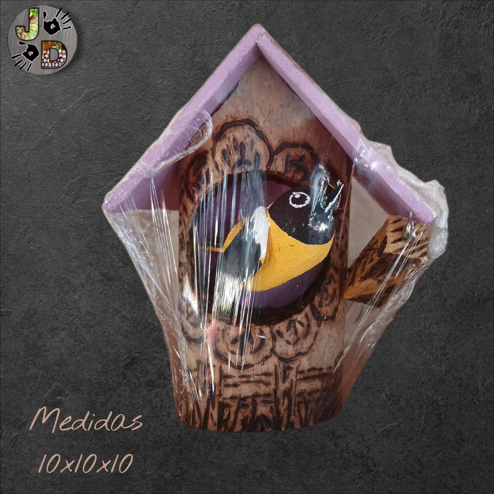
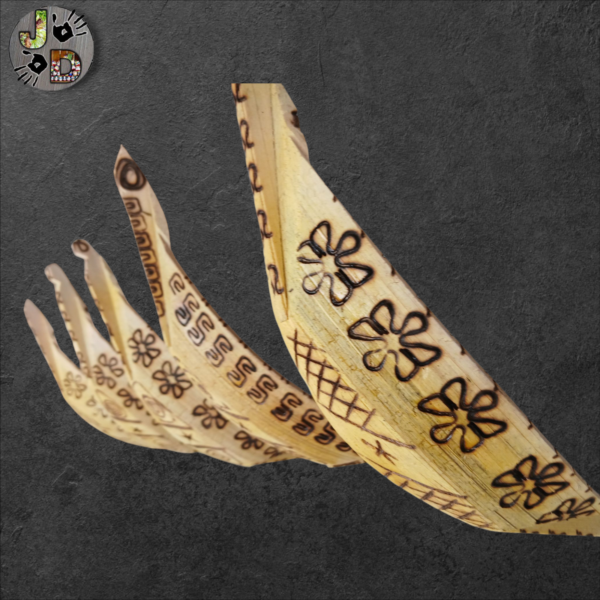
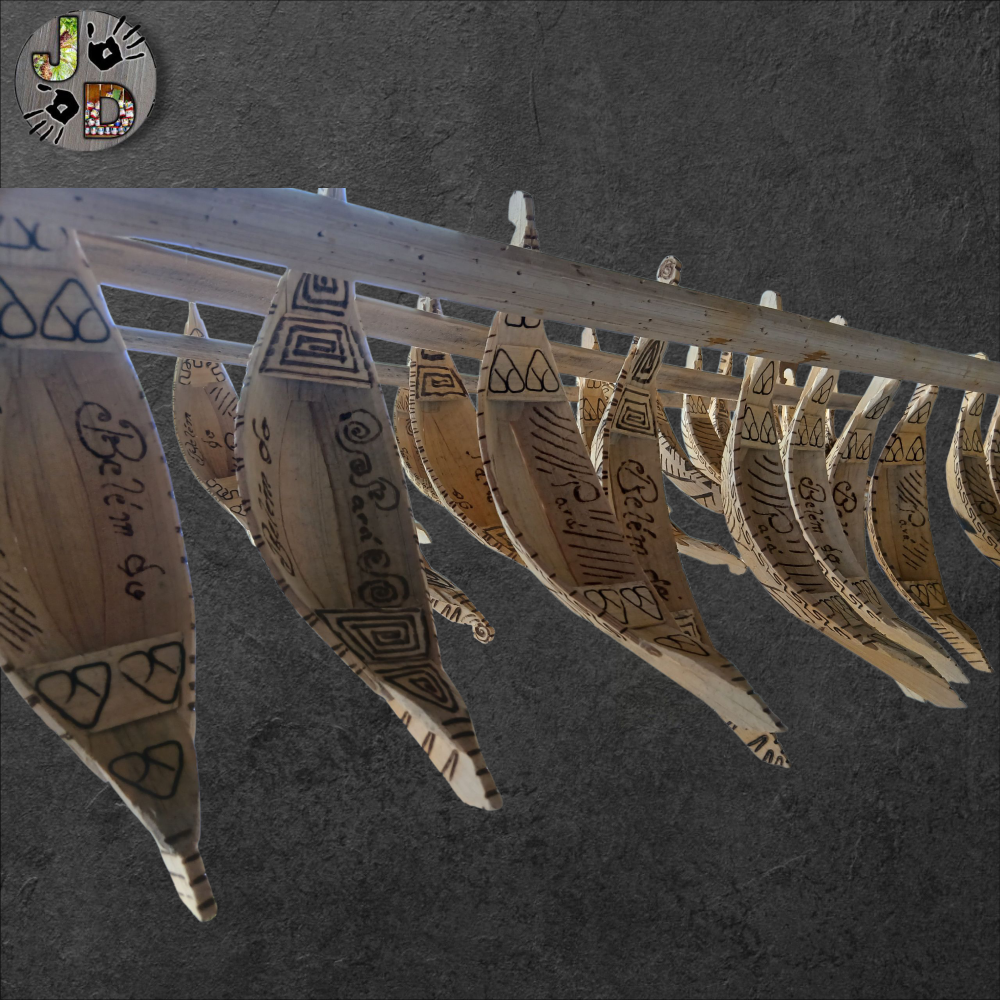
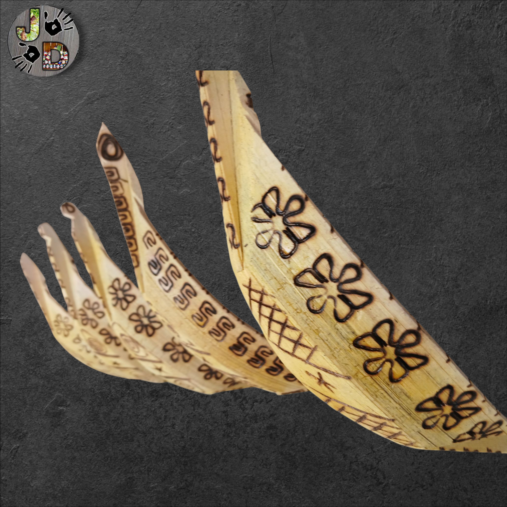
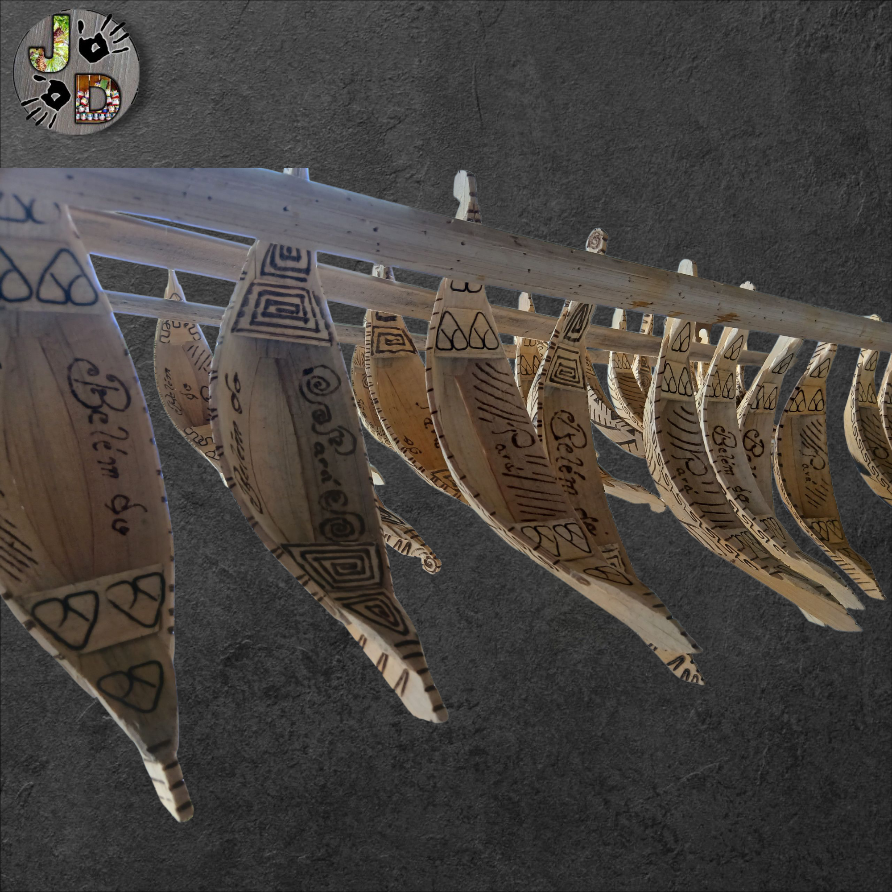

Pirografia
Entrevista ao Programa Panorama com o apresentador Naldo Ajaújo.
03 de outubro de 2025
No dia 03 de outubro de 2025, o programa Panorama, apresentado por Naldo Araújo, destacou o encanto e a tradição dos brinquedos de miriti, símbolo da arte popular de Abaetetuba. Durante a entrevista, o artesão Jonathan Diego apresentou uma novidade que vem despertando a curiosidade do público: os tacos de miriti pirografados, criados a partir da fibra de miriti e transformados em ímãs de geladeira.
A inovação combina a leveza e sustentabilidade da fibra de miriti com a delicadeza da pirografia, resultando em peças exclusivas que preservam a essência da tradição artesanal, ao mesmo tempo em que trazem um toque moderno e funcional para o dia a dia.


A História Milenar da Pirografia
A Pirografia — do grego pyros (fogo) + graphos (escrita), ou simplesmente "escrita com fogo" — é uma forma de arte ancestral e primitiva, cuja técnica acompanha a evolução humana desde a descoberta do fogo.
Origem Antiga: Da Pré-História à Idade Média
- Pioneirismo (Há 10 mil anos): É considerada uma das primeiras manifestações artísticas. Os primeiros artistas usavam lascas de metal ou outros objetos aquecidos na fogueira para gravar desenhos em superfícies naturais como madeira, cabaças, couro ou ossos.
- Florescimento Medieval: A técnica ressurgiu e se popularizou na Europa. Por volta de 1600, era comum usar a ferramenta de manuseio das brasas da lareira (*poker) para decorar móveis e paredes de madeira.
A Revolução: O Pirógrafo Elétrico (Século XIX)
Durante a maior parte da história, a pirografia foi realizada com ferros simples aquecidos manualmente no fogo. Contudo, o grande salto tecnológico veio no final do século XIX e início do século XX:
- Invenção do Pirógrafo: O aprimoramento do pirógrafo elétrico — um aparelho em formato de caneta com pontas aquecidas por eletricidade — revolucionou a arte.
- Controle e Detalhe: Este novo aparelho permitiu aos artistas um controle de temperatura muito mais preciso, facilitando a criação de **traços finos**, **sombras complexas** e **obras de arte detalhadas**, consolidando a pirografia como a técnica que conhecemos hoje.
Feiras de Artesanato em outubro 2025
 

Feira de Miriti 2025 e Feira de Artesanato do Círio (FAC) 2025
A Feira de Miriti de 2025, promovida pela Fundação Cultural de Abaetetuba, será realizada de 8 a 12 de outubro na Praça Dom Pedro II, em Belém. O evento reunirá a arte tradicional de Abaetetuba durante o Círio de Nazaré, destacando os famosos barquinhos de miriti e outros artesanatos que expressam a identidade e o talento dos artesãos locais. A feira reforça a importância da preservação ambiental e da economia da floresta, conectando cultura, tradição e sustentabilidade.
Já a Feira de Artesanato do Círio (FAC) 2025 acontecerá de 9 a 15 de outubro, no estacionamento do Parque Urbano Belém Porto Futuro. O evento, organizado pelo Sebrae, contará com mais de 100 estandes de artesanato paraense e entrada gratuita. O horário de funcionamento será das 10h às 22h, exceto no dia 12 de outubro (dia do Círio), quando a abertura será às 15h.
A FAC reunirá produtos inspirados no Círio de Nazaré, como cerâmica, miriti, fibras, sementes e joias, celebrando a riqueza cultural e artesanal do Pará. Além disso, o público poderá aproveitar uma área de alimentação, espaço kids, Vitrine Amazônica e uma variada programação musical e cultural.
A Feira de Artesanato do Círio (FAC) é uma iniciativa do Sebrae que tem como objetivo apoiar e fortalecer o trabalho dos artesãos e empreendedores da cultura paraense, promovendo o talento e o empreendedorismo regional durante uma das maiores celebrações religiosas e culturais do Brasil.
Detalhes do evento: Feira de Artesanato do Círio (FAC) 2025
- Data: 09 a 15 de outubro de 2025
- Local: Estacionamento do Parque Urbano Belém Porto Futuro
- Horário: Das 10h às 22h (dia 12, abertura às 15h)
- Entrada: Gratuita
Casas de Passarinho
 




Casas decorativas similando casa de pássaros, peça artesanal em fibra de Miriti.
Chaveiros


Modelos diversos pirografados em miriti.
A História Breve do Chaveiro
O chaveiro (ou porta-chaves) é um acessório de origem moderna, cuja função primária é organizar e facilitar o transporte das chaves.
Origem Utilitária (Início do Século XIX)
- Necessidade: Embora as chaves existam desde o Egito Antigo (cerca de 4.000 anos atrás), o chaveiro como objeto portátil e padronizado surgiu no **início do século XIX**. Antes disso, as chaves eram frequentemente carregadas individualmente ou em grandes molhos desajeitados.
- Formato Inicial: Os primeiros chaveiros eram peças simples de **metal**, projetadas puramente para a **funcionalidade** de manter várias chaves juntas, evitando perdas e confusão.
Evolução e Popularização (Século XX)
- Produção em Massa: Com a popularização e a produção em massa de chaves e fechaduras durante a Revolução Industrial e o século XX, a necessidade do chaveiro cresceu exponencialmente.
- Símbolo e Status: O chaveiro deixou de ser apenas um anel de metal e começou a ser **adornado e personalizado**. Passou a ser usado como um **símbolo de status** ou como um acessório de moda.
- Propaganda: Tornou-se extremamente popular como **item promocional** e de lembrança, sendo utilizado por empresas e eventos para criar uma marca duradoura na memória dos consumidores.
O Chaveiro no Século XXI
Atualmente, o chaveiro combina utilidade e personalização, evoluindo para incorporar **tecnologia**, como os *fobs* (controles remotos) e as **chaves inteligentes** que usam criptografia para operar carros e sistemas de acesso.
Imãs de Geladeira


Religiosos e culturais pirografados e feitos com fibra de Miriti.
A História do Ímã de Geladeira
O ímã de geladeira, como item decorativo ou utilitário, é um fenômeno cultural relativamente recente, nascido da união entre tecnologia e marketing.
O Contexto Histórico
- A Geladeira de Aço: As geladeiras modernas, com portas de aço metálico (o material que atrai ímãs), começaram a se popularizar nas cozinhas domésticas após a **Segunda Guerra Mundial**, especialmente a partir do final dos anos 1940 e início dos anos 1950.
- O Ímã Tradicional: Ímãs permanentes existiam há séculos, mas eram peças rígidas e não eram práticos para decorar ou segurar papéis em superfícies finas.
O Surgimento do Ímã Moderno
- A Inovação: O ímã de geladeira moderno, **flexível e plano**, foi patenteado na década de **1970** pelo americano **William Zimmerman**.
- Popularização: Zimmerman popularizou o conceito de usar ímãs finos e maleáveis que podiam ser facilmente cortados em diversas formas, como frutas, desenhos animados ou letras pré-escolares.
O Fenômeno Cultural
O baixo custo de produção e a praticidade da versão flexível fizeram com que o ímã se tornasse um excelente veículo de **propaganda** e a lembrancinha de viagem mais popular do mundo. Eles transformaram a porta da geladeira em um **mural doméstico** para mensagens, fotos e listas de compras.
Pau de Chuva


A História do Pau de Chuva: O Som da Natureza
O Pau de Chuva é um instrumento musical idiofônico de percussão, reverenciado por sua capacidade de reproduzir o som calmante da chuva.
Origem: A Sabedoria Indígena da América do Sul
- Pátria: A forma mais conhecida do instrumento tem origem nas culturas **indígenas da América do Sul**, sendo frequentemente associada ao **Chile** e a povos dos Andes.
- Fabricação Primitiva: Tradicionalmente, é feito a partir do **tronco oco de cactos** (como o cacto Cardón) ou de bambu e madeira, como a **embaúba** no Brasil.
- Mecanismo: O corpo oco é preenchido com pequenas sementes, cascalhos ou miçangas e atravessado internamente por espinhos ou palitos em espiral. Ao ser virado, o conteúdo desliza, recriando o ruído suave e prolongado da água caindo.
Uso Principal: De Rito a Relaxamento
O Pau de Chuva sempre teve um papel que transcende a música:
- Ritualístico: Sua principal função ancestral era em **rituais xamânicos e cerimônias religiosas**. Era tocado para **invocar a chuva** em períodos de seca ou em ritos de cura, simbolizando a água, a vida e o fluxo das emoções.
- Terapêutico e Meditativo: Hoje, é amplamente utilizado na **terapia musical** e na **meditação**, pois seu som natural e impreciso ajuda a acalmar a mente e promove o relaxamento.
Em resumo, o Pau de Chuva é um **instrumento-símbolo**, que leva a atmosfera sonora da natureza a qualquer ambiente, mantendo viva a sabedoria dos povos ancestrais.
Chocalho


Peças musicais artesanais para adultos e crianças, tamanhos variados
O Chocalho: História e Versatilidade
Peças musicais artesanais para adultos e crianças, tamanhos variados.
O chocalho é um dos instrumentos mais antigos do mundo, sem uma única origem definida, mas presente em diversas culturas há **milhares de anos**.
Natureza e Composição
- Classificação: É um **idiofone de agitamento**, ou seja, o som é produzido pelo próprio corpo do instrumento ao ser sacudido.
- Materiais Primitivos: Inicialmente, era feito com materiais naturais, como **cabaças** contendo sementes ou pedras.
Uso Principal ao Longo da História
O chocalho sempre teve múltiplas funções em diversas sociedades:
- Ritual e Espiritual: Usado por civilizações antigas (como Egípcios e Maias) e povos indígenas (como no **maracá brasileiro**) em rituais religiosos, para afastar maus espíritos e marcar o ritmo em cerimônias.
- Lúdico: Também usado desde a antiguidade como **brinquedo infantil** para o desenvolvimento sensorial.
- Musical: Evoluiu para diversas formas (como o chocalho de metal ou o **ganzá**) e hoje é essencial em gêneros brasileiros, como o **samba** e a **bossa nova**.
Em essência, a **simplicidade de seu design** garantiu que o chocalho se tornasse um instrumento universal, fundamental na música e na cultura de vários povos ao longo da história.
Lápis e Caneta


peças variadas.
Brincos


Modelos de brincos únicos, feitos com fibra de jupati e selado com verniz maritimo. modelos variados
A História dos Brincos: Da Antiguidade à Arte Indígena
Os brincos estão entre as joias mais antigas da humanidade, usados há milhares de anos por homens e mulheres. Longe de serem apenas acessórios, eles sempre representaram **status, proteção** ou **identidade cultural**.
Raízes Milenares: A História Geral
- Símbolo de Status: Os registros mais antigos (cerca de 2.500 a.C.) incluem a Suméria e o Egito Antigo, onde eram usados pela **realeza** e pela **nobreza** para indicar poder e riqueza.
- Proteção Espiritual: Em algumas culturas, o uso de adornos nas orelhas tinha a função de **afastar maus espíritos**, que se acreditava tentarem entrar no corpo pelos orifícios.
- Uso Utilitário: Na Europa, piratas e marinheiros usavam brincos de argola como **seguro financeiro**, garantindo que, em caso de morte em terras distantes, houvesse dinheiro para pagar seu funeral.
Foco na Ancestralidade: Brincos Indígenas
Nas culturas indígenas das Américas, os brincos têm um significado profundo, sendo ferramentas de expressão da identidade e da conexão com o mundo natural.
A arte indígena é confeccionada a partir de materiais orgânicos e símbolos que carregam a história e as crenças de cada etnia:
- Materiais Naturais: São criados a partir de elementos da fauna e da flora, como **penas, ossos, sementes, dentes, fibras e conchas**, refletindo a profunda harmonia com a terra.
- O Poder das Miçangas: Peças complexas, especialmente as feitas com **miçangas** (vidrilhos), são bordadas majoritariamente por mulheres. Os padrões e as cores formam os chamados **"Kenê"** (como nos Yawanawá), que não são apenas desenhos, mas uma **linguagem gráfica** que representa animais sagrados (como a jiboia), a força ancestral e a cosmologia da tribo.
- Significado e Identidade: O brinco indígena é usado para indicar **status social, idade, maturidade**, realizações rituais e, acima de tudo, para reafirmar a **identidade cultural** do indivíduo perante a comunidade e o mundo espiritual.
Os brincos indígenas são, portanto, muito mais que adornos; são **testemunhos vivos** da tradição, da arte e da espiritualidade, contando a história de um povo a cada detalhe trabalhado à mão.
Crucifixo

Artesanato religioso esculpido em fibra de Miriti. 25x15
Crucifixo: O Símbolo Central da Fé Cristã
O crucifixo (do latim “cruci fixus”, ou “fixado na cruz”) é um dos símbolos mais importantes do **Cristianismo**. Ele se distingue da simples cruz por incluir a imagem de **Jesus Cristo** pregado nela, o que direciona seu significado para o sacrifício e a redenção.
Origem e Significado no Cristianismo
Antes de Cristo, a cruz era um instrumento de tortura e uma forma vergonhosa de execução romana. Com a crucificação de Jesus, no entanto, seu simbolismo foi transformado:
- Amor e Sacrifício: O crucifixo representa o **amor incondicional** de Deus, manifestado no sacrifício de Cristo para a redenção da humanidade.
- Redenção e Salvação: Simboliza a vitória sobre o pecado e a morte, sendo a “ponte” que liga o mundo terreno ao divino.
- Caminho do Discípulo: Remete ao ensinamento de Jesus: "Se alguém quer vir após mim, negue a si mesmo, tome a sua cruz e siga-me" (Lucas 9:23).
A Importância nas Diferentes Denominações
A presença ou ausência da imagem de Cristo no madeiro estabelece uma distinção importante entre as vertentes cristãs:
- Igreja Católica: O crucifixo é o símbolo central, utilizado em missas, casas e adornos. A imagem de Cristo (**crucificado**) é essencial, pois enfatiza o mistério da Paixão e o sacrifício redentor.
- Igrejas Protestantes: Muitas denominações (como a Presbiteriana ou Batista) preferem usar apenas a **cruz vazia** (sem o corpo de Cristo). Isso tem o objetivo de enfatizar a **Ressurreição** e a vitória de Jesus, que já não está mais na cruz, focando na vida eterna e não no sofrimento.
Embora o foco varie — do sacrifício católico à ressurreição protestante —, o crucifixo e a cruz permanecem o emblema universal do **Cristo** e da **fé cristã** em todo o mundo.
Pratos


Pratos para exposição, em fibra de Miriti, com pirografia variada, 28x28.
Xadrez
Xadrez rustico em fibra de Miriti 30x30.
A História Milenar do Xadrez
O xadrez é mais que um jogo: é um esporte de estratégia e raciocínio com uma história de mais de 1.500 anos, que evoluiu ao viajar pela Ásia, Pérsia e Europa.
Origem na Ásia (Século VI d.C.)
Embora sua origem seja controversa, a teoria mais aceita aponta o xadrez como descendente de um jogo indiano:
- Precursor (Chaturanga): O jogo teria surgido no noroeste da Índia por volta do **século VI d.C.** com o nome de **Chaturanga** (que significa "quatro membros do exército").
- Disseminação Persa: Dali, o jogo se espalhou para a **Pérsia** (atual Irã), onde foi chamado de **Shatranj**. Foi nesse período que o jogo foi assimilado pelos árabes, que o levaram para o Ocidente.
- Etimologia: A palavra "xadrez" é derivada do persa *Shāh* (Rei), que deu origem ao termo *xeque* e *xeque-mate*.
A Revolução das Regras Modernas (Século XV)
O Shatranj chegou à Europa por volta do século X, levado principalmente através da Península Ibérica. No entanto, o xadrez só atingiu sua forma atual durante o Renascimento, no Sudoeste da Europa:
- A Inclusão da Dama: Por volta de **1475**, na Itália e na Espanha, as regras mudaram drasticamente. A peça que antes era o **Vizir** (com movimentos limitados) foi transformada na **Rainha (Dama)**, tornando-se a peça mais poderosa do tabuleiro.
- O Jogo Veloz: A nova mobilidade da Dama e do Bispo tornou o jogo muito mais rápido e complexo, estabelecendo as bases do **xadrez moderno** que conhecemos hoje.
Consolidação e Competição (Séculos XIX e XX)
- Clubes e Torneios: No século XIX, o xadrez se tornou um fenômeno competitivo com a fundação dos primeiros clubes e a realização do primeiro torneio internacional em Londres (1851).
- Campeonato Mundial: O título oficial de **Campeão Mundial de Xadrez** foi estabelecido em 1886, com Wilhelm Steinitz sendo reconhecido como o primeiro campeão.
Atualmente, o xadrez é reconhecido como esporte pelo Comitê Olímpico Internacional (COI), sendo jogado por milhões de pessoas em todo o mundo.
Barco


 




Peça única, feita com fibra de Miriti, selado e invernizado em verniz maritimo, totalmente impermeável.
Acabamento em artes pirograficas.
A História do Modelismo Naval: Mais do que um Hobby
O Modelismo Naval é a arte de construir modelos reduzidos de embarcações. Sua prática é milenar, transcendendo a função de *hobby* para tocar em aspectos religiosos, militares e de engenharia.
As Origens Antigas (Antes de Cristo)
- Propósito Religioso: Os modelos de navios mais antigos remontam a cerca de **5.000 a.C.** (Mesopotâmia) e ao **Antigo Egito** (tumbas de Faraós, como a de Tutancâmon).
- Função: Esses modelos não eram *hobbies*; eram oferendas. Eram colocados nas tumbas para que o falecido tivesse uma embarcação para navegar para a **vida após a morte** ou para cumprir promessas de navegadores que superaram grandes riscos no mar.
- Materiais: Inicialmente eram feitos de barro do Rio Nilo ou, mais tarde, de osso e marfim.
Uso Técnico e Militar (Século XVII em diante)
- Modelos de Engenharia: A partir do **Século XVII**, países europeus (como Inglaterra, França e Espanha) começaram a exigir a apresentação de um modelo em escala (ou **modelo de arsenal**) antes que o navio real pudesse ser construído.
- Propósito: Isso garantia a precisão do *design*, servia como **plano de referência** detalhado para a construção em escala real e auxiliava no treinamento da tripulação.
- O Legado: Muitas das coleções mais valiosas e detalhadas de modelos navais do mundo surgiram dessa exigência militar e técnica.
A Evolução para Hobby (Pós-Guerra)
A prática da construção de modelos de navios se democratizou e se tornou um passatempo global:
- Diversificação: Hoje, o modelismo naval se divide em duas modalidades principais: **Estático** (modelos de vitrine, focados no detalhe histórico) e **Navegável** (modelos funcionais, muitas vezes controlados por rádio, que competem em lagos e piscinas).
- Materiais Modernos: Embora a **madeira** continue sendo o material clássico, o uso de plástico (plastimodelismo), resina e metal permitiu a produção de *kits* detalhados em massa, tornando o hobby acessível a milhares de entusiastas.
O Modelismo Naval é, portanto, uma ponte entre o passado e o presente, mantendo viva a memória das grandes aventuras e da engenharia marítima.